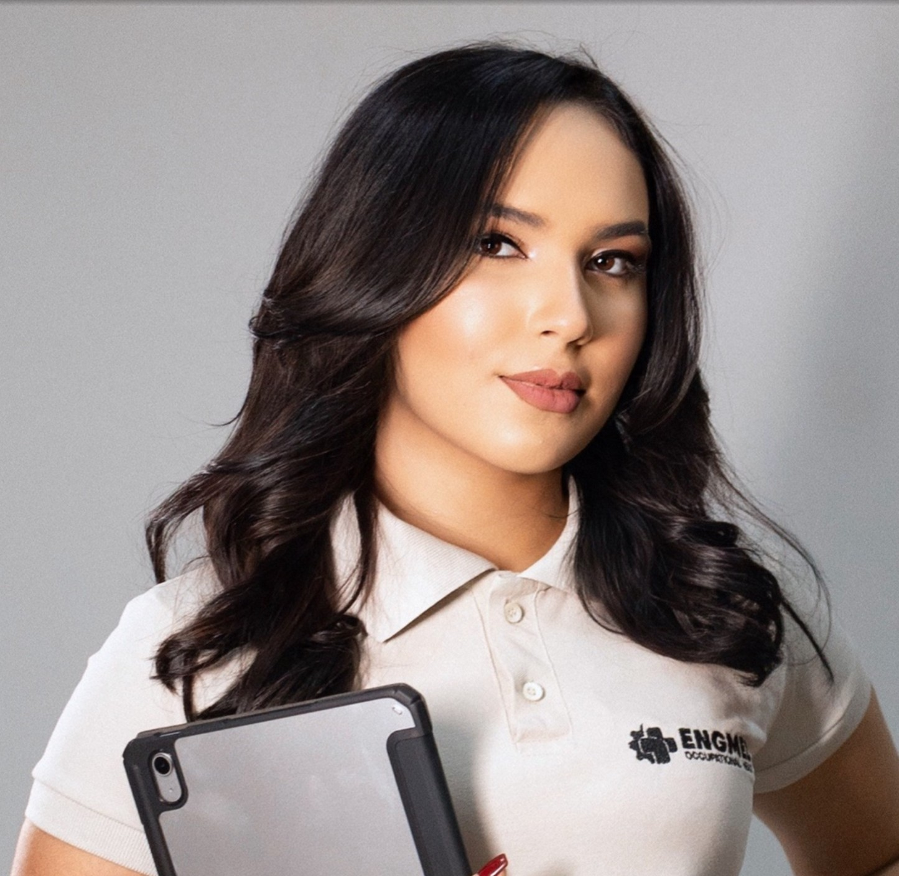

Olá, eu sou Ana Milca!
Empresária · Desenvolvedora em formação · Araripina – PE
Sou empresária e sócia da Engmed Occupational Health, empresa de consultoria em saúde ocupacional. Há 5 anos atuo na gestão do negócio, lidando de perto com processos, pessoas e tomada de decisão.
Em 2024 iniciei uma nova jornada: a tecnologia. Hoje sou graduanda em Engenharia de Software e aluna do CS50, curso online de Ciência da Computação da Universidade de Harvard. Meu diferencial é olhar para o código com a visão de quem conhece, na prática, os desafios de uma empresa e criar soluções que resolvam problemas reais.
Hobbies e interesses
Objetivos
Desenvolver projetos próprios que tragam mais eficiência e inovação para a ENGMED Occupational Health e, a partir dessa experiência, construir parcerias com outros desenvolvedores para criar sites e soluções digitais que facilitem a rotina de empresários e pequenos negócios.